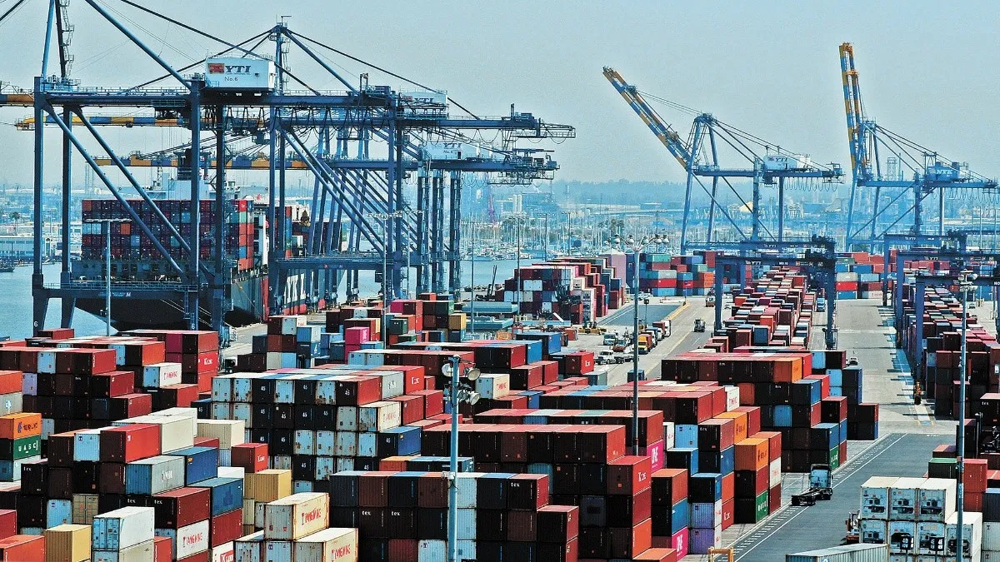

20 de noviembre del 2023
Exportaciones de Nuevo León crecen por encima de la media nacional en 2022
Negocios
Las exportaciones totales del país alcanzaron 521,010 millones de dólares,con un crecimiento de 18.2% respecto al año previo, mientras que las exportaciones de Nuevo León tuvieron un alza de 23.3%,
según datos del Instituto Nacional de Estadística y Geografía (Inegi).
Monterrey, NL. Al cierre de 2022, las exportaciones de Nuevo León registraron un valor de 51,164 millones de dólares,
lo que significa un crecimiento anual de 23.3% comparado con los 41,496 millones de dólares registrados el año previo, y aportaron el 9.8% de las exportaciones totales, de acuerdo con cifras del Instituto Nacional de Estadística y Geografía (Inegi).
El sector fabricación de equipo de transporte registró un crecimiento del 24% respecto a 2021, y representó el 35.3% de las exportaciones totales.
La fabricación de accesorios, aparatos eléctricos y equipo de generación de energía eléctrica registró un 28.6% de crecimiento con una participación de 17.3% a nivel nacional,
mientras el sector de fabricación de maquinaria y equipo tuvo un crecimiento de 26.5% y una participación de 11.2% del total de las exportaciones mexicanas.
La fabricación de accesorios, aparatos eléctricos y equipo de generación de energía eléctrica registró un 28.6% de crecimiento con una participación de 17.3% a nivel nacional,
mientras el sector de fabricación de maquinaria y equipo tuvo un crecimiento de 26.5% y una participación de 11.2% del total de las exportaciones mexicanas.
Estos tres sectores representan el 63.8% de las exportaciones estatales. La Secretaría de Economía de Nuevo León destacó la recuperación del sector automotriz al alcanzar una participación similar a la de 2019, cuando logró su nivel más alto.
El secretario de Economía estatal, Iván Rivas Rodríguez, comentó que el buen desempeño de las exportaciones se debe a una mayor demanda del mercado estadounidense y a
la llegada de nuevas inversiones al estado por la tendencia del nearshoring.
De acuerdo a la información del Programa de la industria manufacturera, maquiladora y de servicios de exportación (IMMEX), las empresas exportadoras asentadas en Nuevo León bajo este programa presentan un valor más alto de insumos nacionales utilizados,
en comparación de la media nacional y los estados de la frontera norte.
“Podemos considerar que en Nuevo León hay una mayor proveeduría y sus exportaciones contienen un mayor valor agregado en su cadena de suministros”, dijo Rivas Rodríguez.
Se estima que el valor agregado directo de las exportaciones genera alrededor del 9.6% del Producto Interno Bruto (PIB) estatal,
de acuerdo al estudio Determinantes de la Competitividad del Estado de Nuevo León, del Centro de Investigaciones Económicas de la UANL y la Secretaría de Economía estatal.
